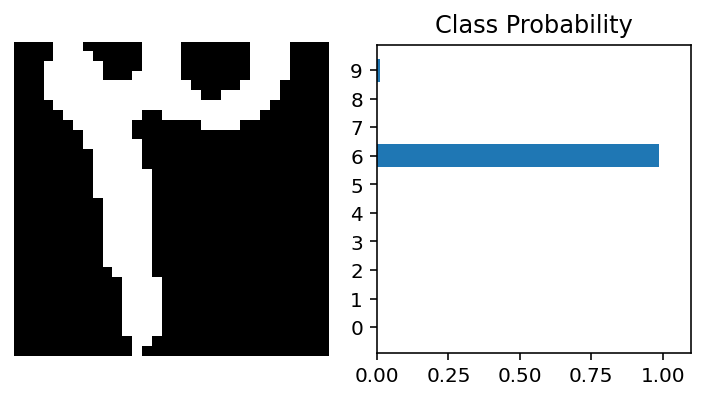

Persian Handwritten digit recognition with NN
In this episode we will train a neural network to recognize persian digits. for this we will use the Hoda dataset , which is a dataset of persian handwritten digits. Link
%matplotlib inline
%config InlineBackend.figure_format = 'retina'
from matplotlib import pyplot as plt
from HodaDatasetReader import read_hoda_cdb, read_hoda_dataset
from collections import OrderedDict
import numpy as np
import time
import torch
from torch import nn
from torch import optim
import torch.nn.functional as F
#read the training data with the dataset reader
print('Reading train dataset (Train 60000.cdb)...')
X_train, Y_train = read_hoda_dataset(dataset_path='./DigitDB/Train 60000.cdb',
images_height=32,
images_width=32,
one_hot=False,
reshape=True)
print(X_train.shape)
Reading train dataset (Train 60000.cdb)...
(60000, 1024)
X_remaining, Y_remaining = read_hoda_dataset('./DigitDB/RemainingSamples.cdb',
images_height=32,
images_width=32,
one_hot=True,
reshape=True)
print('Reading test dataset (Test 20000.cdb)...')
X_test, Y_test = read_hoda_dataset(dataset_path='./DigitDB/Test 20000.cdb',
images_height=32,
images_width=32,
one_hot=True,
reshape=False)
print(X_test.shape)
Reading test dataset (Test 20000.cdb)...
(20000, 32, 32, 1)
# Show one of the digits
plt.title('Y_train[ 45 ] = ' + str(Y_train[45]))
plt.imshow(X_train[45].reshape([32, 32]), cmap='gray')
print(Y_train[45])
print(X_train[4].shape)
2.0
(1024,)
#transoform each image into 1-dimensional matrix/array so that we can give it to a neural network
from torchvision import transforms
transform = transforms.Compose([transforms.ToTensor(), transforms.Normalize((0.5,), (0.5,))])
x_train=[]
j=-1
for i in X_train:
j=j+1
if j<60000:
train=transform(X_train[j].reshape([32, 32]))
train.resize_(1,32,32)
x_train.append(train)
x_train = torch.stack(x_train)
y=Y_train.astype(np.longlong)
y_train=torch.from_numpy(y)
print(x_train.shape)
print(x_train[1])
x_train.resize_(60000, 1028)
print(y_train[0])
print(type(y_train))
print(y_train.shape)
images=x_train[1:10]
labels=y_train[1:10]
print(x_train.shape)
print(x_train[1])
x_train_test=x_train
torch.Size([60000, 1, 32, 32])
tensor([[[-1., -1., -1., ..., -1., -1., -1.],
[-1., -1., -1., ..., -1., -1., -1.],
[-1., -1., -1., ..., -1., -1., -1.],
...,
[-1., -1., -1., ..., -1., -1., -1.],
[-1., -1., -1., ..., -1., -1., -1.],
[-1., -1., -1., ..., -1., -1., -1.]]])
tensor(6)
<class 'torch.Tensor'>
torch.Size([60000])
torch.Size([60000, 1028])
tensor([-1., -1., -1., ..., -1., -1., -1.])
#transofrm the label as well
y=Y_train.astype(np.longlong)
y_train=torch.from_numpy(y)
# Hyperparameters for our network
input_size = 1024
hidden_sizes = [124, 64]
output_size = 10
# Build a feed-forward network
model = nn.Sequential(OrderedDict([
('fc1', nn.Linear(input_size, hidden_sizes[0])),
('relu1', nn.ReLU()),
('fc2', nn.Linear(hidden_sizes[0], hidden_sizes[1])),
('relu2', nn.ReLU()),
('logits', nn.Linear(hidden_sizes[1], output_size))]))
criterion = nn.CrossEntropyLoss()
optimizer = optim.SGD(model.parameters(), lr=0.003)
x_train_test.resize_(x_train_test.size()[0], 1024 )
img = x_train_test[5].view(1, 1024)
# Turn off gradients to speed up this part
plt.title('y_train[5] = ' + str(y_train[5]))
plt.imshow(X_train[5].reshape([32, 32]), cmap='gray')
with torch.no_grad():
logits = model.forward(img)
# Output of the network are logits, need to take softmax for probabilities
ps = F.softmax(logits, dim=1)
print(ps)
#ps = ps.data.numpy().squeeze()
tensor([[0.0944, 0.0973, 0.1062, 0.1123, 0.0965, 0.1097, 0.1020, 0.0741, 0.0972,
0.1103]])
#transform the test data
from torchvision import transforms
transform = transforms.Compose([transforms.ToTensor(), transforms.Normalize((0.5,), (0.5,))])
x_test=[]
j=-1
for i in X_test:
j=j+1
if j<20000:
test=transform(X_test[j].reshape([32, 32]))
test.resize_(1,32,32)
x_test.append(train)
x_test = torch.stack(x_test)
y=Y_test.astype(np.longlong)
y_test=torch.from_numpy(y)
x=0
lab=[]
for y in y_test:
x=x+1
l=y.numpy().tolist()
loc=l.index(1)
lab.append(loc)
labels=np.array(lab)
y=labels.astype(np.longlong)
y_test=torch.from_numpy(y)
print(x_test.shape)
print(x_test[1])
x_test.resize_(20000, 1028)
print(y_test[0])
print(type(y_test))
print(y_test.shape)
images=x_train[1:10]
labels=y_train[1:10]
print(x_test.shape)
print(x_test[1])
x_traintest=x_test
torch.Size([20000, 1, 32, 32])
tensor([[[-1., -1., -1., ..., -1., -1., -1.],
[-1., -1., -1., ..., -1., -1., -1.],
[-1., -1., -1., ..., -1., -1., -1.],
...,
[-1., -1., -1., ..., -1., -1., -1.],
[-1., -1., -1., ..., -1., -1., -1.],
[-1., -1., -1., ..., -1., -1., -1.]]])
tensor(0)
<class 'torch.Tensor'>
torch.Size([20000])
torch.Size([20000, 1028])
tensor([-1., -1., -1., ..., -1., -1., -1.])
x_test.resize_(x_test.size()[0], 1024 )
tensor([[-1., -1., -1., ..., -1., -1., -1.],
[-1., -1., -1., ..., -1., -1., -1.],
[-1., -1., -1., ..., -1., -1., -1.],
...,
[-1., -1., -1., ..., -1., -1., -1.],
[-1., -1., -1., ..., -1., -1., -1.],
[-1., -1., -1., ..., -1., -1., -1.]])
# custom dataset
import pandas as pd
import numpy as np
import torch
import torchvision
import torch.nn as nn
import torch.nn.functional as F
import torch.optim as optim
from torchvision.transforms import transforms
from torch.utils.data import DataLoader
from torch.utils.data import Dataset
class DatasetLoader(Dataset):
def __init__(self, images, labels=None, transforms=None):
self.X = images
self.y = labels
self.transforms = transforms
def __len__(self):
return (len(self.X))
def __getitem__(self, i):
data = self.X[i, :]
data = np.asarray(data)
if self.transforms:
data = self.transforms(data)
if self.y is not None:
return (data, self.y[i])
else:
return data
train_data = DatasetLoader(x_train, y_train)
test_data = DatasetLoader(x_test, y_test)
# dataloaders
trainloader = DataLoader(train_data, batch_size=128, shuffle=True)
testloader = DataLoader(test_data, batch_size=128, shuffle=True)
print('Initial weights - ', model.fc1.weight)
images, labels = next(iter(trainloader))
images.resize_(64, 784)
print(type(labels[1]))
print(images.shape)
Initial weights - Parameter containing:
tensor([[ 1.7182e-02, 2.3910e-02, 6.8182e-03, ..., -6.3461e-03,
-2.1754e-02, -4.4769e-04],
[ 1.5029e-02, -2.4237e-02, -1.3631e-02, ..., 3.0320e-02,
2.6119e-02, -1.2594e-02],
[ 2.7276e-02, -8.2012e-03, 2.6559e-03, ..., -8.8926e-03,
1.8463e-02, -2.6352e-02],
...,
[ 4.3977e-03, 2.3961e-02, 1.0015e-02, ..., 1.3342e-03,
9.3845e-03, -2.5636e-02],
[ 1.0457e-02, -1.4729e-02, -7.0828e-03, ..., -2.3830e-02,
-1.9003e-03, -2.2671e-02],
[-1.6040e-02, 1.6129e-02, 1.6472e-02, ..., 9.6567e-05,
2.6682e-02, 2.1162e-03]], requires_grad=True)
<class 'torch.Tensor'>
torch.Size([64, 784])
#train the network
epochs = 2
print_every = 50
steps = 0
for e in range(epochs):
running_loss = 0
for images, labels in iter(trainloader):
steps += 1
# Flatten MNIST images into a 784 long vector
images.resize_(images.size()[0], 1024)
optimizer.zero_grad()
# Forward and backward passes
output = model.forward(images)
loss = criterion(output, labels)
loss.backward()
optimizer.step()
running_loss += loss.item()
if steps % print_every == 0:
print("Epoch: {}/{}... ".format(e+1, epochs),
"Loss: {:.4f}".format(running_loss/print_every))
running_loss = 0
Epoch: 1/2... Loss: 0.1151
Epoch: 1/2... Loss: 0.1181
Epoch: 1/2... Loss: 0.1125
Epoch: 1/2... Loss: 0.1152
Epoch: 1/2... Loss: 0.1042
Epoch: 1/2... Loss: 0.1084
Epoch: 1/2... Loss: 0.1077
Epoch: 1/2... Loss: 0.1178
Epoch: 1/2... Loss: 0.1148
Epoch: 2/2... Loss: 0.0695
Epoch: 2/2... Loss: 0.1095
Epoch: 2/2... Loss: 0.1154
Epoch: 2/2... Loss: 0.1036
Epoch: 2/2... Loss: 0.1119
Epoch: 2/2... Loss: 0.1164
Epoch: 2/2... Loss: 0.1172
Epoch: 2/2... Loss: 0.1059
Epoch: 2/2... Loss: 0.1202
def get_device():
if torch.cuda.is_available():
device = 'cuda:0'
else:
device = 'cpu'
return device
device = get_device()
# x_test.resize_(x_test.size()[0], 1024 )
def test(net, testloader):
correct = 0
total = 0
with torch.no_grad():
for data in testloader:
inputs, labels = data[0].to(device, non_blocking=True), data[1].to(device, non_blocking=True)
outputs = net(inputs)
_, predicted = torch.max(outputs.data, 1)
total += labels.size(0)
correct += (predicted == labels).sum().item()
print('Accuracy of the network on train images: %0.3f %%' % (
100 * correct / total))
print(correct)
test(model, trainloader)
test(model, testloader)
Accuracy of the network on train images: 96.592 %
57955
Accuracy of the network on train images: 10.000 %
2000
# x_train.resize_(x_train_test.size()[0], 1024 )
for i in range(20):
j=50+i
img = x_train[j].view(1, 1024)
# Turn off gradients to speed up this part
# plt.title('y_train[] = ' + str(y_train[j]))
# plt.imshow(X_train[j].reshape([32, 32]), cmap='gray')
with torch.no_grad():
logits = model.forward(img)
# Output of the network are logits, need to take softmax for probabilities
ps = F.softmax(logits, dim=1)
ps = ps.data.numpy().squeeze()
fig, (ax1, ax2) = plt.subplots(figsize=(5,7), ncols=2)
ax2.set_title(str(y_train[j]))
ax1.imshow(X_train[j].reshape([32, 32]),cmap='gray')
ax1.axis('off')
ax2.barh(np.arange(10), ps)
ax2.set_aspect(0.1)
ax2.set_yticks(np.arange(10))
ax2.set_title('Class Probability')
ax2.set_xlim(0, 1.1)
plt.tight_layout()

x_test.resize_(x_train_test.size()[0], 1024 )
for i in range(20):
j=50+i
img = x_test[j].view(1, 1024)
# Turn off gradients to speed up this part
# plt.title('y_train[] = ' + str(y_train[j]))
# plt.imshow(X_train[j].reshape([32, 32]), cmap='gray')
with torch.no_grad():
logits = model.forward(img)
# Output of the network are logits, need to take softmax for probabilities
ps = F.softmax(logits, dim=1)
ps = ps.data.numpy().squeeze()
fig, (ax1, ax2) = plt.subplots(figsize=(5,7), ncols=2)
ax2.set_title(str(y_train[j]))
ax1.imshow(X_train[j].reshape([32, 32]),cmap='gray')
ax1.axis('off')
ax2.barh(np.arange(10), ps)
ax2.set_aspect(0.1)
ax2.set_yticks(np.arange(10))
ax2.set_title('Class Probability')
ax2.set_xlim(0, 1.1)
plt.tight_layout()

